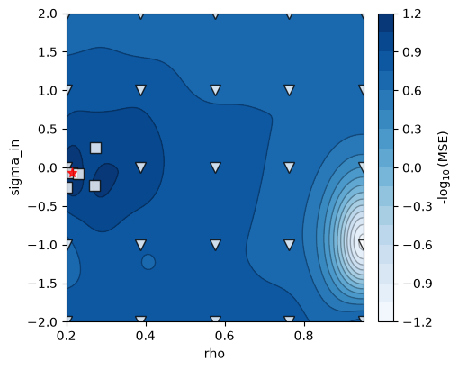
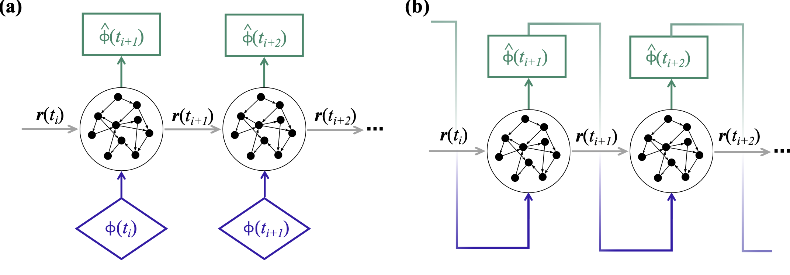

Training and forecasting
One EchoStateNetwork holds three matrices: a fixed random input matrix
\(\mathbf{W}_\mathrm{in}\), a fixed random reservoir matrix \(\mathbf{W}\)
(sparse, rescaled to unit spectral radius when generated), and the trained
readout \(\mathbf{W}_\mathrm{out}\) — the only matrix that learning touches.
The model
One step(u, r) advances the reservoir open loop and reads out the physical
state:
where \(\tilde{\mathbf{u}} = (\mathbf{u} - \texttt{shift}) / \texttt{norm}\) is
the shift-and-scale normalized input (set from the training data range by
default), \(b_\mathrm{in}, b_\mathrm{out}\) are symmetry-breaking biases, and
\(\alpha\) = leak_rate (the default \(\alpha = 1\) is the plain tanh update; see
the leaky-ESN tutorial).
The hyperparameters that matter are the effective spectral radius rho, the
input scaling sigma_in, and the Tikhonov regularization tikh; by default,
validation selects all three (below).
For a parametric ESN, input_parameters appends parameter columns to the
input, densely connected through \(\mathbf{W}_\mathrm{in}\) — one reservoir
conditioned on a physical parameter
(tutorial 02).
With partial observability, observed_idx selects which components of the
full state are fed back as inputs.
The readout is linear in the reservoir state, and the tanh reservoir is odd:
without the biases, the network forecasts \(-\mathbf{u}\) from \(-\mathbf{u}\) as
well as \(\mathbf{u}\) from \(\mathbf{u}\). Besides the biases, r2_mode=True
breaks this symmetry in the readout, which then reads every second unit
squared,
with the units numbered from 0 (Pathak et al. 2018; the r2_mode of
MagriLab/Adjoint-ESN).
\(\mathbf{W}_\mathrm{out}\) keeps its size, the ridge regression and every
validation strategy read the same squared units, and Jacobian includes the
factor \(2 r_j\) of the squared units. The option works with the parallel layout,
and the networks of independent patches inherit it.
For a spatially extended system, the parallel layout (patch_size, halo,
periodic) advances one reservoir per patch of neighbouring sites with the
same update, and the patches share the three matrices
(parallel echo state network).
Training
train(train_data) accepts a single trajectory (Nt, N_dim), a batch of
segments (L, Nt, N_dim), or a ragged list of segments of different lengths,
and runs four steps:
- Split the data into washout (
N_washsteps, insidet_train), training + validation (t_train,t_val— inferred from the data when omitted), and an optional held-out test tail (t_test). Gaussian noise (noise) is added to the training inputs only — targets stay clean — as regularization. - Generate \(\mathbf{W}_\mathrm{in}\) and \(\mathbf{W}\) from
seed, if not already set, or when an option that defines them changed (see training again). -
Select hyperparameters by Bayesian optimization over
hyperparameters_to_optimize, scoring each candidate with a validation strategy — closed-loop error on folds carved from the training series. The search trace is kept inbo_results.With
'tikh'inhyperparameters_to_optimize, every evaluation of the validation strategy selects the Tikhonov factor,tikh, from the gridtikh_range, sotikhis not a dimension of the Bayesian optimization. Without'tikh', every evaluation keeps the fixedtikh, andtikh_rangeis left as it was. A search over'tikh'alone is therefore a grid search:trainevaluates the strategy once at the fixedrho,sigma_inandleak_rate, without Bayesian optimization and without scikit-optimize.bo_resultsthen holds that evaluation: one value infunc_vals,x = []andhp_names = [].A parametric network also searches the normalization of its parameters. With
optimize_parameter_normalization, which is on by default withinput_parameters,trainadds the shift and the scale of every parameter column (param_shift_i,param_norm_i) to the search, which is then a Bayesian optimization with the budgetN_func_evals, also forhyperparameters_to_optimize=[]or['tikh']. An emptyhyperparameters_to_optimizetherefore skips the search, and leavesbo_resultsNone, only withoutinput_parametersor withoptimize_parameter_normalization=False.
Validation-error landscape over
(rho, sigma_in)from tutorial 01: markers are the evaluated points (initial grid + gp-hedge acquisitions), the star the selected optimum.plot_training=Trueproduces this figure. 4. Solve the ridge regression for \(\mathbf{W}_\mathrm{out}\) on the full train + validation data with the selectedtikh.
The keywords of train set attributes of the network before these steps, e.g.
esn.train(y, rho_range=(0.5, 1.0)). A keyword that is not an option, e.g. a
misspelt name, a method or a read-only property, is ignored, and one warning
per call names it, also with n_seeds > 1 and with independent patches. A call
of train that raises, or that is interrupted, leaves the network as it was,
with the options and the matrices that it had before the call.
training_summary() returns the realized split, folds, and selected
hyperparameters of the last call; with echostatenetwork.set_verbose(), train
also logs it, with the table of the hyperparameter search.
Training again
A trained network is not trained again: a second train call warns and leaves
the network unchanged, unless it passes force=True. A copy of a trained
network (esn.copy()) and a network loaded with its matrices (from_arrays,
pickle) are trained, so that training them on other data also needs
force=True. With force=True, train keeps
- the reservoir (\(\mathbf{W}_\mathrm{in}\), \(\mathbf{W}\)) while
N_units,connect,Win_type, the number of inputs (observed_idx) and of parameter columns (input_parameters),param_in_reservoir,patch_sizeandhaloare unchanged, as keywords oftrainor as attributes, whatever the seed given totrain; - a
t_trainort_valthat was given, to the constructor, totrainor as an attribute;
and computes again
- the hyperparameter search and \(\mathbf{W}_\mathrm{out}\);
- the reservoir, when one of the options above changes, from the seed given to
train, else from the seed of the reservoir; a diagnostic message names the option; - a
t_trainort_valthat the previous call inferred, from the new data, so that the same data give the same split, and shorter data still train; dt_ESN = dt * upsamplefrom a newupsample, with the time step of the data,dt, unchanged;t_trainandt_valremain times.
Details and edge cases
- The seed. A seed alone does not replace the reservoir:
train(seed=s, force=True)without a changed option keeps it, and warns thatseedis ignored unlesssis the seed of the reservoir. A new network trained withtrain(seed=s)draws the reservoir ofs, andtrain(seed=s, n_seeds=m, force=True)trains the realizations of the seedss, s+1, ..., s+m-1, each with its own reservoir, and keeps the best one (see seeded ensembles). A new reservoir comes from a new generator: it is the reservoir that a new network with the same options draws withtrain(seed=...). The first call oftraindraws the reservoir from the generatorrngof the attributeseed, after the noise on the inputs, so no seed reproduces this reservoir: a reservoir thattraindraws again then comes from the attributeseed, and an option changed and then changed back does not restore the reservoir of the first call. Setting the attributeseed, e.g.esn.seed = 7, starts the noise on the inputs from a new generator and keeps the reservoir. - Matrices set by hand and networks pickled by echostatenetwork 0.2.3 or
earlier.
traintreats a reservoir set by hand (W,Win,from_arrays), or held by a 0.2.3 network, as a reservoir drawn with the options that the network has at the start of the call: an option that the call changes draws a new reservoir from the attributeseed, so that networks that share one reservoir draw the same new one. When only one matrix fits the options, e.g. afteresn.N_units = 20; esn.W = W20,trainkeeps that matrix and draws the other one alone. - The split of a network pickled by echostatenetwork 0.2.3, which has no
record of what it inferred. On one series,
traintakest_trainandt_valas inferred when they are the split that it infers (the training and validation steps fill 80% of the series, andt_valis 20% of these) andsplit_summarysays thatt_valwas inferred. For a network trained withn_seeds > 1(it holdsseed_scores), whose summary may say that an inferredt_valwas given, the split alone decides, so that a given split equal to the inferred one is inferred again. Otherwise,traininferst_valagain when the summary says so, and keepst_train. To keep a split, passt_trainandt_valtotrain. - Attributes set to an inferred value. An attribute set to the value that
the previous call inferred, e.g.
esn.t_val = esn.t_val, cannot be told from the inferred value and is inferred again: to keep it, pass it totrain, e.g.esn.train(y, t_val=esn.t_val, force=True). - The normalization of the parameters.
trainadds again tohyperparameters_to_optimizethe namesparam_shift_iandparam_norm_ithat the previous call added, only while the network has parameters andoptimize_parameter_normalization, unless the list was set since. Removing the parameters (input_parameters=None) or settingoptimize_parameter_normalization=Falsetherefore removes them from the search. The rangesparam_shift_rangeandparam_norm_rangethat the first call sized from the parameters are kept. - The time step of the data.
dtis a parameter of the constructor, not an option of the network:train(dt=0.5, force=True)ignores it, with a warning that suggestsdt_ESN. To change the time step of the data, pass the time step of the network,dt_ESN = dt * upsample, e.g.esn.train(y, dt_ESN=0.5 * esn.upsample, force=True)fordt = 0.5, or set the attributeesn.dt_ESN. - The readout.
readout_inputandr2_modechange \(\mathbf{W}_\mathrm{out}\) only. - The noise on the inputs. Training a single network again on the same
data with the same options does not reproduce it: the noise on the inputs
continues the generator
rng, so the selected hyperparameters and \(\mathbf{W}_\mathrm{out}\) may change. Withn_seeds > 1, every realization draws its noise from its own seed, and training again reproduces the realizations. - Independent patches (
shared=False). The network of every patch has its own seed,patches[p].seed, whichtrainspawns from the seed of the parallel network when it builds the networks of the patches. The network of a patch follows the rules above: an option that defines its reservoir draws a new one from the seed of the patch, which a new single network with the options of the patch reproduces withtrain(seed=patches[p].seed), and a new parallel network does not.trainbuilds the networks again, with seeds spawned from the seed given totrain, else from the attributeseed, only whenpatch_sizeorhalochanges. Otherwise, a seed given totrainis ignored, with a warning: the networks keep their seeds, and their reservoirs unless an option changes them. Setting the attributeseedof the parallel network therefore changes neither the seeds nor the noise of the patches untiltrainbuilds the networks again. The networks of the patches take the split and the time step of the parallel network. An option changed on the parallel network, as a keyword oftrainor as an attribute (e.g.esn.N_units = 10), reaches the network of every patch; the other options of a patch, e.g. therhothat its own search selected, are kept.
Seeded ensembles
The reservoir is a random draw, so train(n_seeds=m) trains m realizations
(seeds base, base+1, ...) in parallel processes, keeps the network with the
best validation score in place, and stores every score in seed_scores —
selection by validation score consistently lands in the ensemble's best half
on test error (see the
validation strategies page).
The score of a realization is the minimum of its search (bo_results['fun'])
or, without a search, one evaluation of the validation strategy at the fixed
hyperparameters of the realization, tikh included. The first seed, base, is
the seed given to train. Without it, base is the first seed of the
previous call with n_seeds > 1 while the attribute seed is one of the seeds
of that call, as after it (the kept seed), so that training again with
force=True on the same data and options selects the same realization;
otherwise, e.g. on the first call, base is the attribute seed. A call with
n_seeds = 1 leaves seed_scores, which then hold the scores of the last call
with n_seeds > 1. A warning raised while the realizations train, e.g.
when fewer validation folds than N_folds fit, appears once, at the line that
calls train, and follows the warnings filters of the calling process. That is
also where the warning points when it comes from code of the user that the
package calls back, e.g. a validation strategy that calls validation.WFV; a
single network points at that code instead.
Forecasting
The ESN runs in two modes:

(a) open loop: the reservoir is driven by data \(\phi(t_i)\) and its readouts \(\hat{\phi}(t_{i+1})\) are one-step-ahead predictions; (b) closed loop: each prediction is fed back as the next input and the network runs autonomously.
- Open loop:
step()is fed observed data; used for training and for washout — driving the reservoir from \(\mathbf{r}_0 = \mathbf{0}\) through a short window of true history so it synchronizes with the physical state before a forecast. - Closed loop: each prediction is fed back as the next input
(
outputs_to_inputsselects the observed components and re-appends the parameter columns); the model runs autonomously.
r = np.zeros((esn.N_units, 1))
u = np.zeros((esn.N_dim, 1))
for u_in in wash: # open-loop washout on true history
u, r = esn.step(u_in[:, None], r)
forecast = []
for _ in range(n_steps): # closed-loop forecast
u, r = esn.step(esn.outputs_to_inputs(u), r)
forecast.append(u[:, 0])
Alignment: the washout's last output is the one-step-ahead prediction of the
frame after wash, so closed-loop prediction i corresponds to data row
len(wash) + 1 + i.
run_test() packages this — open-loop washout, closed-loop forecast, error
against truth — over the held-out test tail, with plots. For a fair error
metric across components use compute_nMAE(Y_true, Y_pred, norm=...), the
range-normalized mean absolute error used throughout training and validation.
See the EchoStateNetwork tutorial for the full workflow on Lorenz 63, and the API reference for every attribute and method.